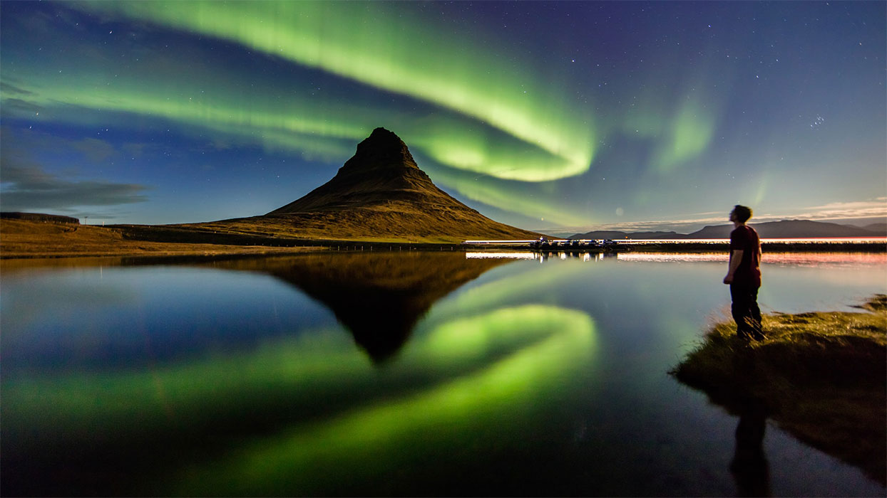
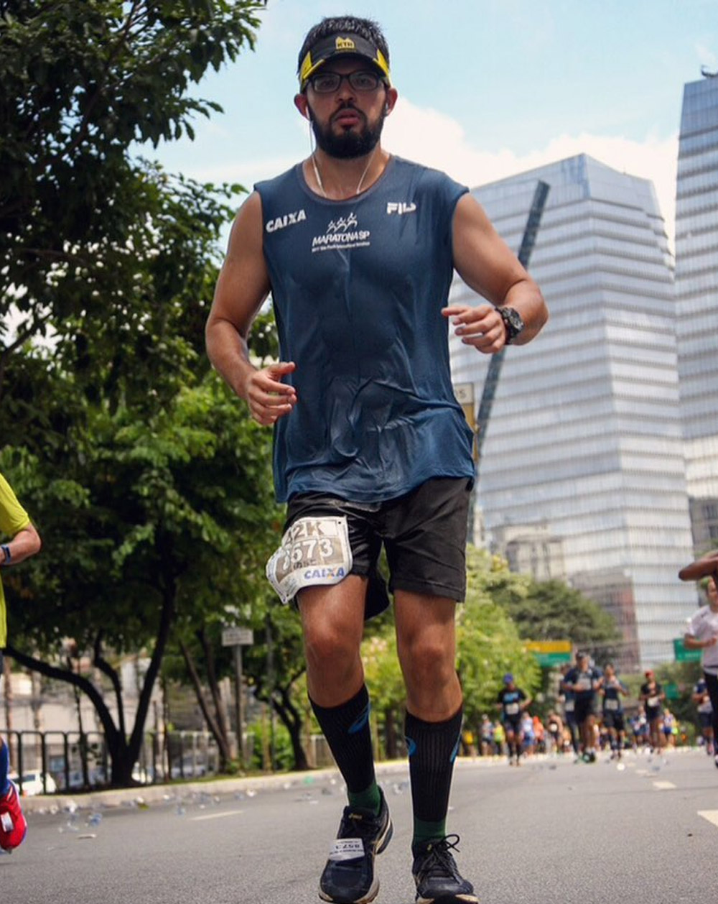
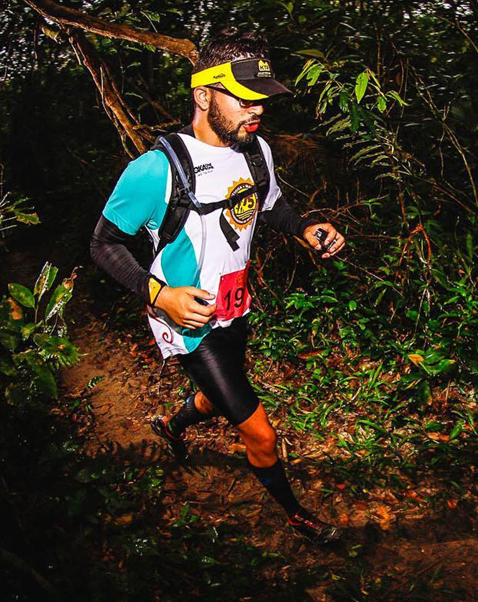
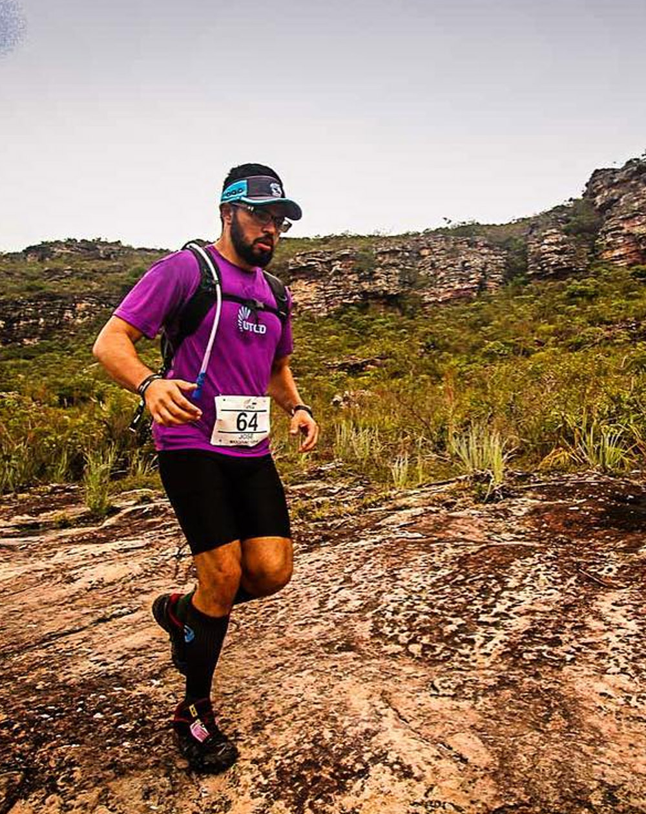

Aurora Boreal, um sonho a realizar com o aprendizado na UTFPR
Bio
Sou o José Daniel, sou paulista com o sangue bahiano, atualmente, estudo Sistemas para Internet na UTFPR remotamente por conta do cenário pandêmico.
Desde cedo, aprendi sobre trabalhar e estudar para conquistar meus objetivos, com grandes exemplos na família, trabalho desde os 13 anos e desde então nunca parei e espero que nunca pare de sempre correr atrás dos meus objetivos e sonhos.
Sou um completo curioso, gosto sempre de aprender, inovar e ter novas experiências que tragam algum aprendizado para minha vida, seja no âmbito profissional ou pessoal, acredito fortemente no conceito de Lifelong Learning, ou seja, sempre buscar aprender algo novo.
Atividades
Trabalho
Sou PJ, Designer, WebDesigner, Dev, Gestor de Anúncios, Social Media e Criador de Conteúdo.
Hobbies
Nas horas vagas gosto de ler, assistir e de praticar esportes, sou corredor de provas longas.

Causas
Doador de Sangue Hospital Beneficência Portuguesa/SP e Apoiador do Hospital do Câncer de Barretos/SP.

Família
Acredito que a família seja a base de tudo na vida, tenho as melhores pessoas ao meu lado me apoiando.
Provas longas

42km São Paulo
Depois de algumas provas, o desafio foi de conquistar a primeira maratona, que veio no dia do meu aniversário. Um grande sonho realizado.

75km Bertioga Maresias
Meses após conquistar a primeira maratona, costeei o litoral paulista, saindo de Bertioga e chegando à Maresias para completar 75km.
